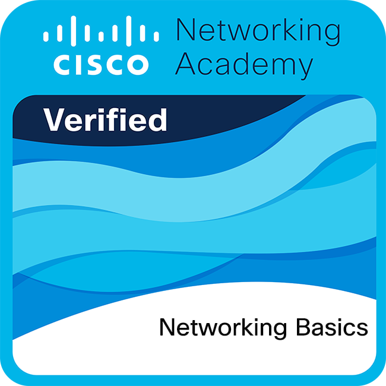

Certification
Validating essential networking knowledge including IP addressing, routing, switching, network communication, and the fundamentals of modern internet infrastructure.

Cisco
Overview
I earned the Cisco Networking Basics certification, which validates my foundational understanding of computer networking concepts and communication technologies. This certification strengthened my knowledge of how devices connect, communicate, and exchange data across modern networks.
Through this certification, I gained practical knowledge of networking fundamentals, including IP addressing, network protocols, routing, switching, and basic network security concepts. It also enhanced my understanding of how local and global networks are designed and managed.
The credential helped me develop a strong foundation in troubleshooting network connectivity issues and understanding the role of networking devices such as routers, switches, and access points. I also explored essential concepts related to internet infrastructure and secure network communication.
Achieving this certification reflects my commitment to building strong technical skills in networking and IT infrastructure. It has strengthened my confidence in understanding modern network environments and supporting technology-driven communication systems.
Certification Domains
Understanding the basics of computer networking, including network types, topologies, communication models, protocols, and data transmission concepts.
Learning the functions of routers, switches, access points, cables, and other networking devices used to establish reliable communication between systems.
Exploring IPv4 and IPv6 addressing, subnetting basics, TCP/IP protocols, DNS, DHCP, and methods used for efficient network communication.
Applying foundational cybersecurity practices, securing network devices, understanding firewalls, and protecting networks against common threats and vulnerabilities.
Using basic troubleshooting techniques, diagnostic commands, and monitoring tools to identify, resolve, and maintain network performance and connectivity.
Technical Competencies
Authenticity
This certification is officially issued by Cisco and can be independently verified on Credly. The badge below uniquely identifies this achievement and links to the verified credential.